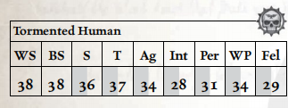

鉴于人类在银河系中的庞大数量，他们占据了枯刃斗教地牢居民的最大比例，并且可以参与各类活动。无论他们是在与斗教的巫灵战斗，在抵御野兽的猛攻中挣扎，还是作为劫掠者表演飞行的移动靶——在竞技场内外，人类无处不在。
按照惯例，枯刃斗教往往会将那些无法提供多少娱乐价值的人类交易掉或另行处置——若受害者不能对巫灵或野兽构成哪怕最微小的挑战，竞技场的观赏性便会大打折扣，而一场迅速轻松的杀戮也换不来多少威望。那些心智或身体软弱者会被迅速交易给阴谋团或血伶人秘会，因为枯刃斗教寻求的是拥有力量与一丝怒火之人，以更好地满足其需求。因此，大多数身陷枯刃斗教地牢者都是斗士，早已带着激光灼烧、弹丸与刀刃留下的伤疤。他们以正义的仇恨与绝望的凶残战斗——那是早已将生命献于战斗之人的特质。

移动： 3/6/9/18 承伤： 10
护甲： 粗皮甲（手臂2，躯干2）。 总坚韧加值：3
技能： 警觉（Per），通用学识（帝国）（Int），恐吓（S），听说语言（低哥特语）（Int）。
天赋： 基础武器训练（激光、实弹），仇恨（黑暗灵族），近战武器训练（原始），钢铁神经，偏执，手枪训练（激光、实弹）。
武器： 单分子剑（近战；1d10+3 R；穿甲2；平衡）。
装备： 无。